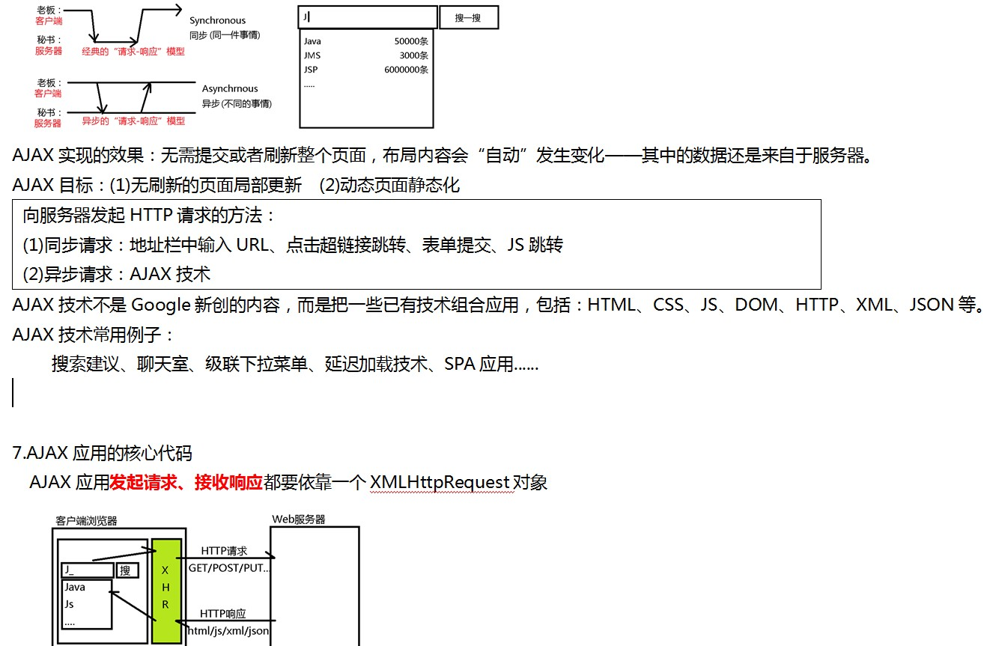
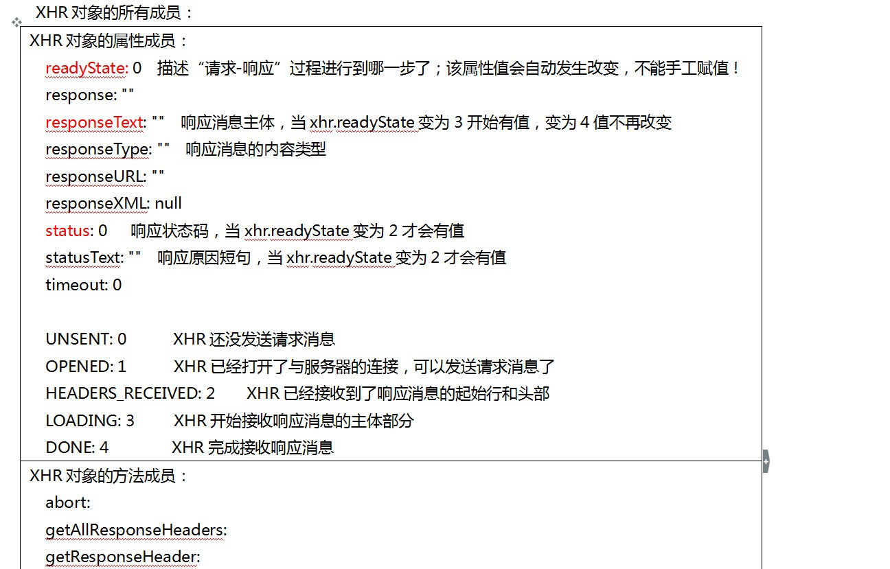
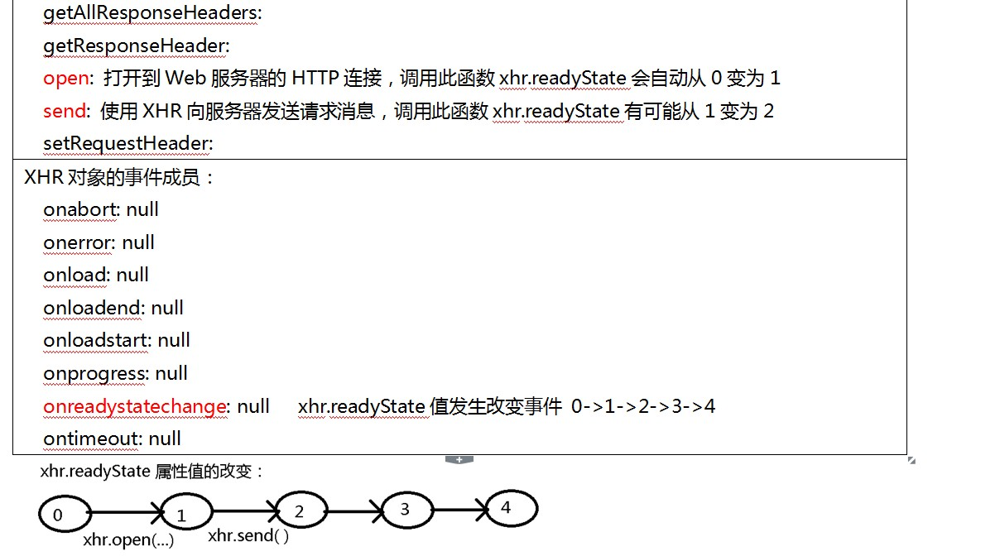

1.HTML FORM的编码方式
<form action="" method="" enctype="">
Encode Type：用于指定表单数据的编码类型，可取值：
(1)application/x-www-form-urlencoded：默认值，表单数据编码后再提交 k=v&k=v&k=v
(2)text/plain：表单数据不经编码直接提交，服务器拒绝接收——HTTP协议规定：请求消息只能包含ASCII字符！
(3)multipart/form-data：专用于提交包含文件上传的表单数据
2.今日笔记在导图中链接：HTTP协议知识点整理.mmap
3.计算机界如何描述一个文件的类型？
(1)使用文件后缀名描述其类型——混乱且不可靠的
1.jpg 2.jpeg
5.mp3 6.mpeg3
index.html index.htm index.xhtml
很多的文件的后缀名命名很混乱；有些操作系统中文件还没有后缀名
(2)使用文件的MIME类型——精准无歧义
80年代，电子邮件中为了描述一个附件的文件类型，定义了 Multipurpose Internet Mail Extension，业界预定义了若干的固定的MIME值：
text/html
image/jpeg
application/javascript
.......
在Web中，如何设置响应消息的Content-Type值？
(1)如果客户端直接请求某静态资源，无需设置；服务器会自动根据文件类型设置Content-Type
(2)如果客户端请求的是动态资源，如PHP，可以使用内置的函数设置响应消息的头部，如：
header('Content-Type: image/jpeg');
4.HTTPS协议
HTTP: 80
HTTPS: 443 Secure安全的HTTP协议，在请求消息和响应消息发送/接收之前，先进行加密&解密。
5.学习HTTP协议的目标：
(1)查找看不见摸不着的错误——AJAX请求错误
(2)进行Web请求优化：
网站性能优化最主要的就是要减少HTTP请求及每次响应中内容的长度。可以从连接过程中的下列方面加以考虑：
(1)域名解析
尽可能减少域名解析次数——减少跨站外部资源的引用
(2)创建连接
努力减少连接创建次数——使用Connection: keep-alive,启用持久连接，避免重复连接
(3)减少请求次数
尽力减少请求次数——合理设置缓存、资源合并
(4)缩短响应等待时间
提高服务器端运行速度——提高数据运算及查询速度，使用访问器端缓存技术
(5)缩小响应主体长度
<br/> => <br>
<input/> => <input>
<li>Xxx</li> => <li>Xxx
<img src="//baidu.com/1.jpg">
尽可能减小响应数据长度——启用压缩
jQuery
AJAX 服务器 / HTTP协议 / 原生AJAX / jQueryAJAX
H5新特性
提示：AJAX代码就4行！难学——综合之前所学的所有内容！
6.AJAX概述
AJAX：Asynchronous Javascript And Xml，异步的JS和XML。
2001年，Google为自己的搜索引擎添加了Google Suggest功能，把用到的技术命名为AJAX：


